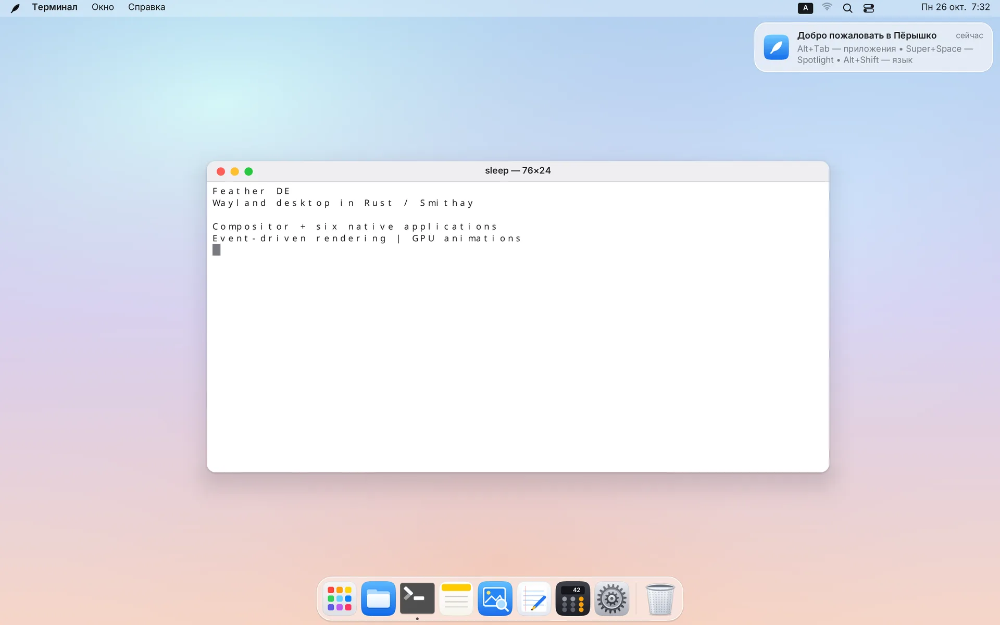

Пёрышко
ПёрышкоКрасивый рабочий стол, который не тормозит
Стекло, скругления и пружинные анимации на собственном Wayland-композиторе. Когда вы ничего не делаете, процессор тоже отдыхает: 0 % в простое.
Открытый проект на Rust · Linux x86_64 · UEFI и BIOS

Скорость — это и есть дизайн
Обычно приходится выбирать: красиво или быстро. В Пёрышке у каждой метрики есть бюджет, и любое изменение, которое за него выходит, считается ошибкой.
загрузка процессора в простое: ни таймеров, ни перерисовок «на всякий случай»
работа композитора на кадр, анимации идут на полной частоте экрана
собственной памяти на всю оболочку: меню, Dock, поиск и настройки
кадров в анимации браузера: ввод и сеть работают в фоне и не задерживают кадр
Замеры композитора на 4K-экране с масштабом 200 %. Методика и отчёты — в репозитории.
Всё на своих местах
Не нужно собирать окружение из десятка пакетов: всё уже работает вместе и выглядит как одно целое.
Стекло и скругления
Матовые панели, мягкие тени и скруглённые углы у любых окон, даже у старых программ.
Пружинные анимации
Окна, Dock и панели движутся по физике пружины, а не по таймеру, и всегда точно на частоте экрана.
Dock и Launchpad
Увеличение при наведении, закрепление перетаскиванием, сетка приложений со страницами и поиском.
Spotlight
Запуск любой программы с клавиатуры и быстрые вычисления прямо в строке поиска.
Обзор окон и рабочие столы
Mission Control, до 16 рабочих столов, активные углы и жесты трекпада тремя и четырьмя пальцами.
Пункт управления
Wi-Fi, Bluetooth, звук и яркость в одном месте, плюс системные настройки из 15 разделов.
Глобальное меню
Меню программ Qt, KDE и GTK в верхней строке, системный трей и часы.
Уведомления
Баннеры с действиями, центр уведомлений с группировкой и режим «Не беспокоить» по расписанию.
Для всех
Шесть языков, дробный масштаб и HiDPI, крупный текст, высокий контраст и отключение анимаций.
Свои приложения в том же стиле
Написаны на Rust вместе с оболочкой, поэтому лёгкие и выглядят как часть системы.
Оригинальные обои
Созданы специально для Пёрышка. Можно поставить и свои: PNG, JPEG или WebP.


Попробуйте Пёрышко
Запишите образ на флешку и загрузитесь: система работает прямо с неё, а установить на диск можно в любой момент.
Пёрышко OS 0.3.2
- На базе Ubuntu 26.04 LTS, обновления обычным
apt upgrade - Живой сеанс без установки и понятный установщик с шифрованием диска
- Офис, браузер, видео, музыка, печать и драйверы уже внутри
- UEFI с Secure Boot и старые компьютеры с BIOS
SHA-256: d294d15ac42074a70ad51e289f9bdbba985fee4ef9b336d340231b0c321e5135
Уже есть Ubuntu?
- Подходит и для Ubuntu Server без рабочего стола
- Подключает APT-репозиторий: дальше всё обновляется само
- Только оболочка, без набора программ: добавьте
| bash -s -- --minimal
Честно о статусе. Пёрышко — молодой проект в активной разработке. Проверка на разных видеокартах, ноутбуках и мониторах ещё идёт. Если что-то не работает, расскажите об этом в issues на GitHub.